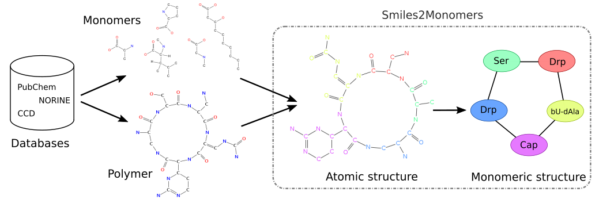

My research interests
PhD thesis: Algorithmic for automatic annotations of Non Ribosomal Peptides

Abstract
The monomeric composition of polymers is powerful for structure comparison and synthetic biology, among others. However, most of the online molecular resources only provide atomic structures but not monomeric structures. So, I designed a software called smiles2monomers (s2m) to infer monomeric structures from chemical ones.
The underlying algorithm is composed of two steps: a search of the monomers using a subgraph isomorphism algorithm fitted to data and a tiling algorithm to obtain the best coverage of the polymer by non-overlapping monomers. The search is based on a Markovian index improving the execution time by 30% compared to the state of art. The tiling is performed using a greedy algorithm refined by a “branch & cut” algorithm. s2m had been tested on two different already annotated datasets. The software reconstructed the manual annotations with an excellent sensibility in a very short time.
Norine database, the reference knowledge base about specific polymers called Non Ribosomal Peptides (NRP), is developed by the bonsai research group. s2m, executed on the Norine database, alerted us about wrong manual annotations. So, s2m not only creates new annotations, but also facilitates the process of annotation curation. The new annotations generated by the software are currently used for the discovery of new NRP, new activities and may be used to create completely new and artificial NRP.
Related publications
Y. Dufresne, L. Noé, V. Leclère, M. Pupin, Smiles2Monomers: a link between chemical and biological structures for polymers, J. of Cheminformatics (2016), link
M. Pupin, Q. Esmaeel, A. Flissi, Y. Dufresne, P. Jacques, V. Leclère, Norine: a powerful resource for novel nonribosomal peptide discovery, Synth. and Sys. Biotech. (2015), link
A. Flissi, Y. Dufresne, J. Michalik, L. Tonon, S. Janot, L. Noé, P. Jacques, V. Leclère, M. Pupin, Norine, the knowledgebase dedicated to non-ribosomal peptides, is now open to crowdsourcing, Nuc. Acids Res. (2015), link
Links
Thesis manuscript (in french): https://yoann-dufresne.github.io/Thesis/manuscrit.pdf
Smiles2Monomers: http://bioinfo.lifl.fr/norine/smiles2monomers.jsp
Source code: https://github.com/yoann-dufresne/Smiles2Monomers